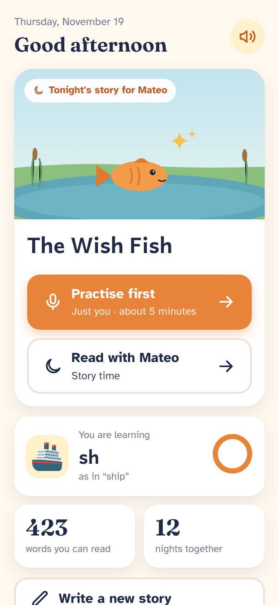
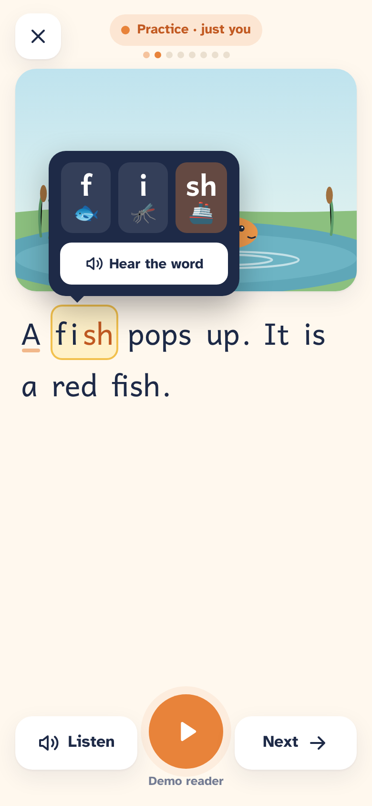

The product
Practise in private. Read with pride.

1. Tonight’s story. Stars their child. Every word is one this parent can read, plus the new sound they’re learning.

2. Five private minutes. Hearth listens word by word and helps the moment the parent pauses.

3. Story time. Bedtime mode, silent hints only the parent sees, and a question to ask after each page.